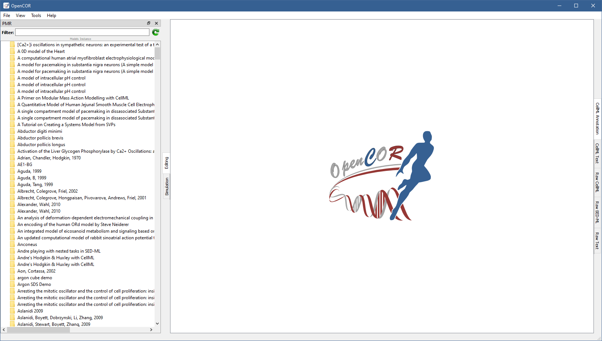

PMRWindow plugin¶
The PMRWindow plugin offers an interface to PMR. By default, it lists all the published exposures found in PMR:
The list can be filtered.
For example, to enter Noble as a filter gives:
You can right click on any of the exposures to view them in PMR, copy their URL to the clipboard, or make a local copy of them (see the PMR Workspaces window for the latter).
Alternatively, double click on any of the exposures to reveal their contents.
For example, to double click on Noble, 1962 gives:
From there, double click on either noble_1962.cellml or noble_1962.sedml to open them in OpenCOR.
You can also right click on any of them to view them in PMR or copy their URL to the clipboard.
Tool bar¶
 Reload the list of exposures
Reload the list of exposures